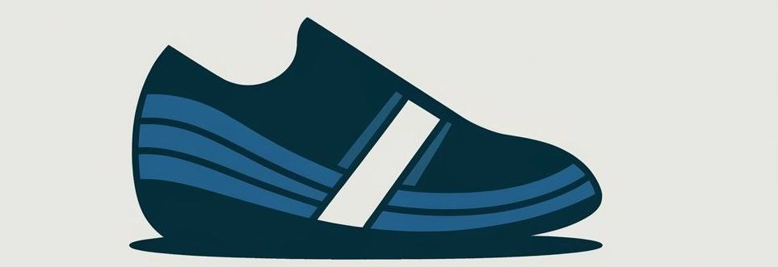
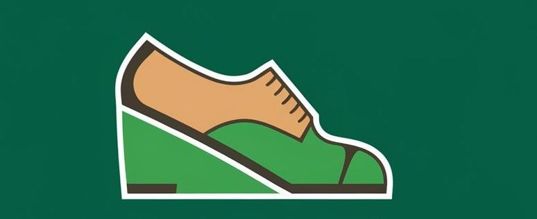
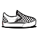
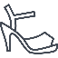

-

Ayakabı Tamiri
"Eskimiş ayakkabılarınızı hayata döndürüyoruz!"
-

Ayakabı Tamiri
"Ayakkabılarınızın ömrünü uzatın, tamir ettirin!
Hizmetlerimiz
"Ayakkabılarınızın hak ettiği bakım ve tamir burada!Taban Değişimi
Ayakkabı taban değişimi, eskiyen veya yıpranan tabanın yenisiyle değiştirilmesi işlemidir. Bu işlem, ayakkabının ömrünü uzatırken rahatlık ve destek sağlamaya devam etmesini sağlar
Topuk Tamiri
Ayakkabı topuk tamiri, kırılan veya aşınan topukların onarılması ya da yenilenmesi işlemidir. Bu işlem, ayakkabının dengesini ve estetiğini koruyarak kullanım ömrünü uzatır

Dikiş ve Yapıştırma Onarımı
Ayakkabı dikiş ve yapıştırma onarımı, açılan dikişlerin yeniden dikilmesi veya ayrılan parçaların özel yapıştırıcılarla birleştirilmesi işlemidir. Bu onarım, ayakkabının dayanıklılığını artırarak daha uzun süre kullanılmasını sağlar.
Deri ve Kumaş Yenileme
Ayakkabı deri ve kumaş yenileme onarımı, yıpranmış veya solmuş yüzeylerin özel boyalar ve bakım ürünleriyle tazelenmesi işlemidir. Bu yenileme, ayakkabının ilk günkü gibi şık görünmesini sağlarken malzemenin dayanıklılığını da artırır

Su Geçirmezlik Uygulaması
Ayakkabı su geçirmezlik uygulaması, ayakkabının yüzeyine özel koruyucu sprey veya kaplamalar uygulanarak suya dayanıklı hale getirilmesi işlemidir. Bu işlem, ayakkabının nemden etkilenmesini önleyerek ömrünü uzatır ve her türlü hava koşulunda güvenle kullanılmasını sağlar.
Boyama ve Renk Yenileme
Ayakkabı boyama ve renk yenileme, solmuş veya yıpranmış renklere sahip ayakkabıların özel boyalarla yeniden canlandırılması işlemidir. Bu işlem, ayakkabıya taze bir görünüm kazandırarak tarzınızı yenilemenize olanak tanır
Hoşgeldiniz!
Her adımınızda sağlamlık, ayakkabı tamir hizmetimizle yanınızda!
Sevdiğiniz ayakkabılar yıprandı diye üzülmeyin! Uzman ellerde, ayakkabılarınız ilk günkü şıklığına ve sağlamlığına kavuşsun. Eskiyen, yıpranan ya da onarıma ihtiyaç duyan ayakkabılarınızı bize getirin; onları yepyeni bir görünüme kavuşturalım. Adımlarınızda fark yaratan kalite ve güven için buradayız!
Ayakkabılarınız, anılarınız kadar değerli! Yıpranmış veya hasar görmüş ayakkabılarınızı atmayın, onlara yeni bir hayat verelim. Profesyonel ayakkabı tamir hizmetimizle, her adımınızda rahatlık ve şıklık sizinle olsun. Sevdiğiniz ayakkabılara tekrar kavuşmanın tam zamanı!
- Eskimiş ayakkabılarınızı hayata döndürüyoruz!
- Ayakkabılarınızı atmayın, bize getirin – onlara yeni bir şans verelim!
- Ayakkabılarınızın ömrünü uzatın, tamir ettirin!
- Eski dostlarınızı geri kazanın, ayakkabı tamiri bizde!
- Her adımınızda sağlamlık, ayakkabı tamir hizmetimizle yanınızda!